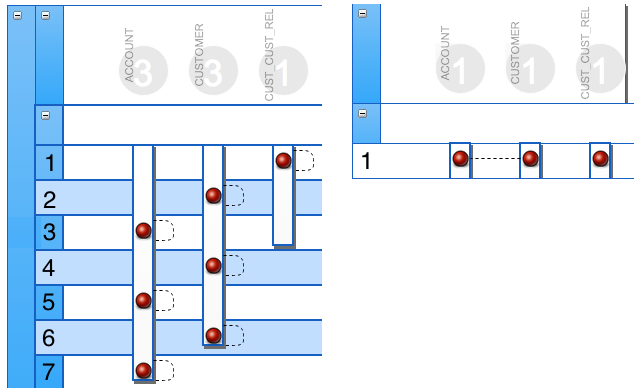
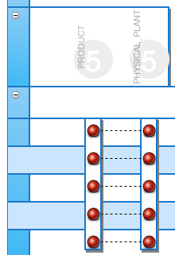
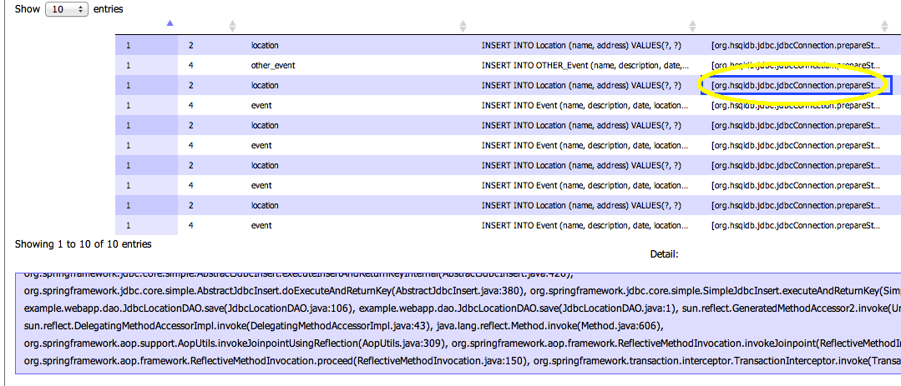
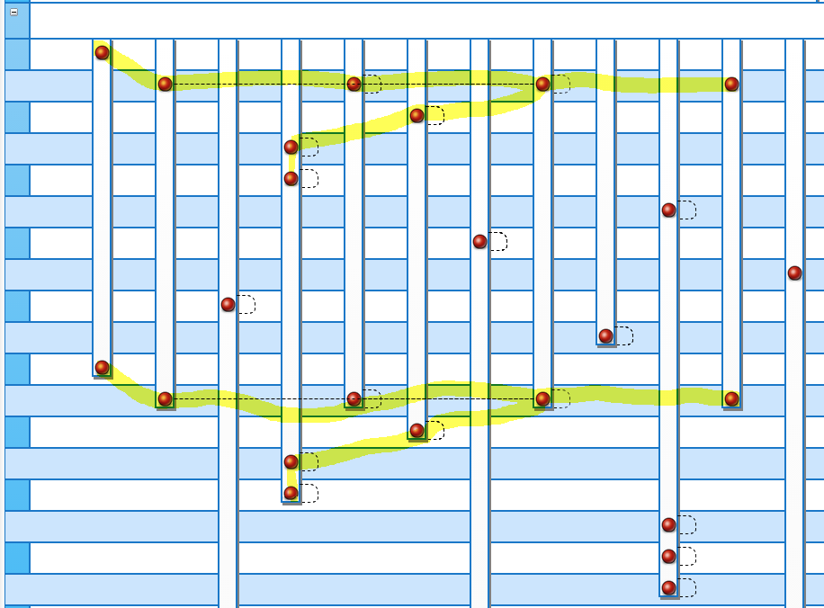

Download and Install
Download and install the wuqiSpank beta release. You can import your SQL from plain text files.
New October 26, 2014: We now have support for DB2!wuqiSpank Road Trip to Atlanta!
Come see wuqiSpank at the 2014 CMG International Performance Conference. 3:45pm on Thursday, Nov 06. (full schedule). The last time slot on the last day. Saving the best for last? Sure, we'll go with that.
No other tool does this.
- wuqiSpank generates 'SQL Sequence Diagrams' of JOINs and other table accesses.
- These diagrams provide immediate understanding of SQL data access strategy (DAS). Without wuqiSpank, it takes many ardous minutes to glean strategy from raw SQL text.
- Better than any other tool, these diagrams can help prevent, detect, and validate the #1 performance problem in enterprise software (too many calls to DB).
Features
For non-java app, you get SQL visualization (SQL Sequence Diagrams). For Java/JDBC apps, you additionally get
- tracing facility to capture SQL from your running web app
- Exact line number of java code that launched each SQL statement
- Grouping. All SQL from a single user's round trip are grouped together.
- Team-wide transparency. SQL Sequence Diagrams are available in web browser to entire development team
Are you a DynaTrace user?
Vote here (DT Community Logon required) to get wuqiSpank functionality added to DynaTrace.
What is a wuqi?
A wuqi is an Unecessary Query Invocation and can reside in any tier of your application. wuqiSpank is fond of spanking JDBC wuqis.
3rd Party Dependencies
This project sits on the shoulders of InTrace, FoundationDB, Wicket, and others..
Missing JOINs
Best Practice: JOIN tables when appropriate to minimize the number of round trips to the database.The graph on the left, below, shows code with 7 SQL statements, each selecting data from just a single table. No JOINs are made, even though the data model supports joins. The graph of the refactored code, on the right, returns the exact same data, but more efficiently with this single query:
SELECT * FROM CUSTOMER C, ACCOUNT A WHERE C.CUST_ID = A.CUST_ID AND C.CUST_ID IN (SELECT CUST_REL_ID FROM CUST_CUST_REL
WHERE CUST_ID = 'SPANK-001')

Missing Caching
Best Practice: Use EHCache or similar to avoid the performance overhead of querrying for static data you've already retrieved. The graph below shows SELECT statements pulling data from two tables whose contents change so rarely, their data should be cached at system startup. Wuqispank prominently displays the table names (PHYSICAL_PLANT and PRODUCT) near the circles at the time of the graph, so you can quickly determine whether the activity is appropriate for the give tables.
Stack Traces
Wuqispank shows the exact line number that a SQL statement was executed from. The blue rectangle acts like the MS-Excel cursor and the large window at the bottom displays the detail you can't see in a single table cell.
Patterns
Wuqispank highlights repetetive sequences of the same SQL statements. These are ripe for optimization!